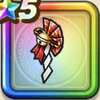

封竜の髪飾り
攻略班 8.5点 / けもの系への耐性+5%ゾンビ系への耐性+5%ブレス耐性+1%けもの系への耐性+5%ドラゴン系への耐性+5%とくぎHP回復効果+4%【スパスタ】スキルHP回復効果+2%
くわしい特徴
【レベル別習得スキル】 Lv1けもの系への耐性+5% Lv8ゾンビ系への耐性+5% Lv10とくぎHP回復効果+4% Lv12【スパスタ】スキルHP回復効果+2% Lv12ブレス耐性+1% Lv18【スパスタ】かいふく魔力+5 Lv20さいだいHP+5 Lv23すばやさ+15 Lv25ドラゴン系への耐性+5% 【限界突破スキル】 1凸かいふく魔力+5 2凸さいだいMP+7 3凸さいだいHP+5 4凸守備力+7